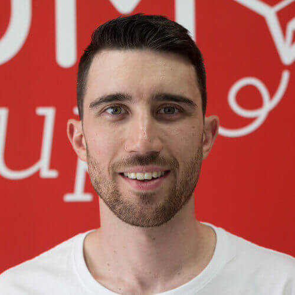

¡Un antes y un después en las energías renovables!Andrea Barber es CEO de Rated Power, una empresa tecnológica cuyo software permite realizar el diseño de plantas fotovoltaicas a gran escala.
¡Reducir el impacto del carbono es uno de los objetivos principales de Rated Power! Respirar aire más limpio, sufrir menos enfermedades o luchar contra el cambio climático son algunas de las acciones que persiguen.
¡Genial, nos encantan los negocios que apuestan por conseguir modelos energéticos más limpios y sostenibles!
.jpg)
¡El poder de la información con la geolocalización!Javier de la Torre es fundador y CSO de CARTO, una empresa que se basa en 3 pilares o, mejor dicho, softwares: builder, engine y data observatory.
Pero ¿qué tienen de particular estos 3 elementos? CARTO a través de ello ofrece a sus clientes una serie de herramientas que ligan datos internos de la empresa con la geolocalización.
Extraer información de la geolocalización ahora es sinónimo de mejorar el rendimiento de un negocio.
¡Increíble, ahora podemos conseguir datos geolocalizados para mejorar el rendimiento de una empresa.¿Qué será lo siguiente que nos permitirá hacer la geolocalización?

¡Continuamos con otro emprendedor que también apuesta por la geolocalización!Rafael Ferrer es CEO y cofundador de Neki, una startup aragonesa que ha creado el GPS perfecto para las personas mayores.
Desde Neki han integrado estos dispositivos de búsqueda en accesorios cotidianos como relojes, pulseras o cinturones.¡Ahora las personas mayores pueden ser atendidas rápidamente gracias a esta solución tecnológica!

Ahora damos un salto a la salud con María López, CEO y founder de Bitbrain.María López creó Bitbrain, una empresa especializada en neurotecnología que nace como spin-off de un equipo de investigación de la Universidad de Zaragoza.El grupo científico es pionero en aplicaciones de interfaz focalizadas en el campo de la neurotecnología.
¡Neurociencia, inteligencia artificial y hardware, la combinación perfecta para desarrollar productos innovadores!Biosensores, amplificadores de bioseñales, eye tracking, sistemas wearables… Un amplio abanico de ítems que ofrecen lo último en tecnología para el ser humano.¿Con que avance nos sorprenderá Bitbrain próximamente?

¡Continuamos con más innovación tecnológica, pero esta vez aplicada a la industria!Verónica Pascual es la CEO de ASTI, un grupo empresarial basado en ingeniería robótica móvil que estudia, diseña y fabrica soluciones de intralogística automatizada.¡Las últimas tecnologías para mejorar el funcionamiento de una empresa!
ASTI destaca por las soluciones de transporte interno de las empresas, es decir, el movimiento de materiales y productos dentro de las industrias mediante vehículos de guiado automatizado: AGVs (Automated Guided Vehicles).¡Son el número 1 en Europa en el área de robótica de vehículos autoguiados e inteligentes!

¡Un modelo de negocio que se sale de los estándares establecidos!Jorge Dobón es el CEO de Demium Startups, una incubadora de empresas que rompe con los modelos tradicionales.
No son ni una aceleradora ni un venture builder. Han creado un nuevo concepto de negocio llamado pre-idea pre-team incubator. ¡Dan un paso atrás, van a la raíz del asunto y llegan hasta el emprendedor!Solo el 30% de las startups sobreviven a su primer año de vida, sin embargo desde Demium le ha dado la vuelta a ese porcentaje.
Continuamos con una emprendedora que entró a formar parte del “Top 100 Mujeres Líderes en España” en la categoría “Revelación y Emprendedoras”: Elena Ibañez.Ella es CEO y fundadora de Singularity Experts, la plataforma focalizada en el empleo y las personas
Singulary Experts se centra en aquellos jóvenes y profesionales que no tienen claro su futuro y están confundidos con la velocidad de la tecnología y automatización de la educación. ¡Te ayudan a descubrir tu profesión ideal!

¡Y volvemos a centrarnos en el cuidado del medio ambiente!Ella es Carlota Pi, cofundadora y executive president de Holaluz, una corporación que apuesta por la energía verde.Se trata de la empresa que ofrece energía de origen 100% renovable.Desde Holaluz no buscan revolucionar el sector, sino cambiar el mundo.
¿Cómo han empezado a hacerlo? Han creado una tarifa plana de energía renovable. ¡Algo nunca visto en el campo de la energía!Increíble, se trata de una propuesta diferente e innovadora para que las familias se despreocupen de sus facturas y comiencen a preocuparse por el planeta.

¡El poder de la tecnología y la interconexión!Alicia Asín, confundadora y CEO de Libelium, es toda una figura referente del llamado IoT (Internet of The Things) o en versión castellana “el internet de las cosas”.
En Libelium han creado un ecosistema para que las personas y empresas puedan utilizar IoT en cualquier parte del mundo. Se trata de una tecnología que conecta objetos cotidianos con la red digital.¿Qué nos deparará la transformación digital próximamente?

Y finalmente, en este ranking no podía faltar nuestro CEO, Pablo Sanagustín. Que, aunque no le guste que le demos autobombo, es un crack y un emprendedor imparable.Los dos pilares fundamentales que le definen son el trabajo duro y las últimas soluciones de tecnología.
La suma de estos dos ingredientes han dado lugar a ideas de negocio reveladoras como ONiAd, la startup de publicidad digital que nació en octubre de 2017 y en tan solo su primer año y medio de vida alcanzó los 10.000 clientes.Así que lo que todo el equipo nos preguntamos es… ¿Con qué nuevos proyectos e ideas de negocio nos sorprenderá nuestro Pablo este 2020?